1. Microorganisms are measured in dash.
a) Centimetre
b) millimetre
c) micron
d) meter.
2. dash shows both living and non-living characteristics.
a) Protozoa
b) Virus
c) Bacteria
d) Fungi
3. Dash is a prokaryotic microorganism.
a) Virus
b) Algae
c) Fungi
d) Bacteria
4. Based on shape, the bacteria are classified into dash types.
a) two
b) three
c) four
d) five
5. Common cold in human is caused by dash.
a) plasmodium
b) influenza
c) vibrio cholera
d) aphthovirus
1. dash is prepared from a mould called penicillium.
2. dash are the infectious protein particles.
3. The infecting virus particle found outside the host cell is dash.
4. Microorganism can be seen with the help of a dash.
5. Bacteria, which has a flagellum at one end is classified as dash.
1. Disease causing microorganisms are called pathogens
2. Female anopheles’ mosquito is a carrier of dengue virus.
3. Chicken pox is a communicable disease.
4. Citrus canker is transmitted by insects.
5. Yeast is used in the large scale production of alcohol.
Nitrogen fixing bacteria |
Vaccine |
Tuberculosis |
Prion |
Kuru |
Lactobacillus acidophilus |
Probiotics |
Bacteria |
Edward Jenner |
Rhizobium |
1. Assertion: Malaria is caused by Protozoa.
Reason: The disease is transmitted by mosquito.
2. Assertion: Algae are heterotrophic.
Reason: They do not have chlorophyll.
a. If both assertion and reason are true and reason is the correct explanation of assertion.
b. If both assertion and reason are true and reason is not the correct explanation of assertion.
c. If assertion is true but reason is false.
d. If both assertion and reason are false.
1. Write the name of any nitrogen fixing bacteria.
2. Name the bacteria used in the production of vinegar.
3. Write the names of any three protozoans.
4. Who discovered penicillin?
5. Which diseases can be prevented by vaccination?
1. Write the four types of bacteria, based on their shape.
2. What are antibiotics?
3. What are pathogens?
4. How disease causing microorganisms enter into human beings?
5. Why microorganisms are essential for agriculture?
1. Write a short note on bacteria and its structure.
2. How microorganisms are useful in the field of medicine?
3. Write a short note on common human diseases caused by microorganisms.
4. How can we improve the beneficial bacterial count in human beings?
5. Write a short note on probiotics.
1. Ananthnarayan and Panicker’s-Textbook of Medical Microbiology. Edited by C.K.J.Panicker.
2. Essential Microbiology - Stuart Hogg.
3. Textbook of Microbiology – Surinder Kumar.
1. https://en.wikipedia.org/wiki/ Microorganism
2. https://www.sciencedirect.com/topics/ agricultural-and-biological-sciences/ microorganisms
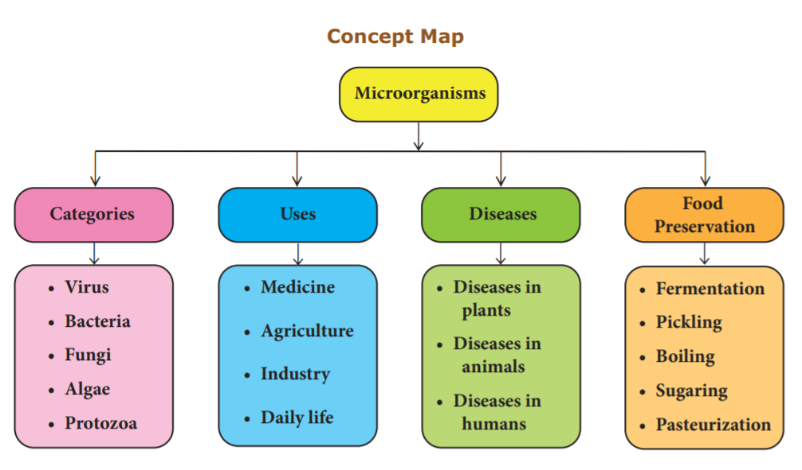
MICROORGANISMS
This activity enables the students to know about the Classification of Microorganisms.
Steps
Web link: https://www.slideshare.net/mgcnkedahsc/11-classsification-ofmicroorganisms
(or) scan the QR Code
The living organisms found on the earth differ in their structures, habit, habitat, mode of nutrition and physiology. The estimated number of plant species on the earth is 8 point 7 million (1 million equal to 10 lakhs). Among them 6.5 million species are living on land and 2 point 2 million species are living in the ocean. Out of them 4,00,000 species are flowering plants. The living organisms show lot of similarities and differences so that they can be arranged into many groups systematically. In traditional system of classification, plant kingdom is divided into two sub-kingdoms called non flowering plants (Cryptogams) and flowering plants (Phenerogams). Thalophyta, bryophyta and pteridophyt are non flowering plants. In this lesson, we will study about algae, fungi, bryophytes, pteridophytes and classification of plants.
Algae is a latin word (Algae - Sea weeds). They are chlorophyll bearing, simple and primitive plants. These plants are autotrophs. Algae belongs to thallophyta and the plant body of algae is called thallus. i.e. the plant body is not differentiated into root, stem and leaf.
Most of the algae are living in aquatic region. It may be fresh water or marine water. Very few algae can survive in wet soil. Some algae are very minute and float on the surface of the water. These algae are called phytoplankton. Some of the algae are symbionts (Algae living with fungi and they both are mutually benefitted). E.g. Lichen. A few species of algae are epiphytes. The branch of study of algae is called phycology or algalogy. Algae reproduces by three methods. They are:
Algae are classified into different classes based on the pigments. They are given in Table 17 point 1.
Table 17 point 1 Classification of algae based on pigments
Class
|
Example |
Types of Pigments |
Reserve food material |
Bluegreen algae (Cyanophyceae) |
Ocillatoria |
Phycocyanin |
Cyanophycean Starch
|
Green algae (Chlorophyceae) |
Chylamydomonas |
Chlorophyll |
Starch
|
Brown algae (Phaeophyceae) |
Laminaria |
Fucoxanthin |
Laminarian starch and Manitol |
Red algae (Rhodophyceae) |
Polysiphonia |
Phycoerythirin |
Floridian Starch
|
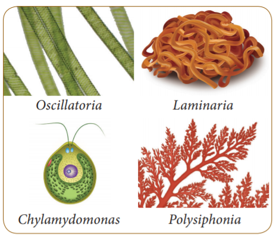
Food
Algae are consumed as food by people in Japan, England and also in India. Example Ulva, Spirulina, Chlorella etc. Some algae are used as food for domestic animals. Example. Laminaria, Ascophyllum.
Agriculture
Some of the blue green algae are essential for the fixing of atmospheric nitrogen into thesoil, which increases the fertility of the soil. Example. Nostoc, Anabaena.
Agar Agar
Agar agar is extracted from some red algae, namely Gelidium and Gracillaria. It is used to prepare growth medium in laboratories.
Iodine
Iodine is obtained from brown algae like Laminaria.
Space travel
Chlorella pyrenoidosa is used in space travel to get rid of C O 2 and to decompose human wastes.
Single Cell Protein (S C P)
Some of the single cell algae and blue green algae are used to produce protein. Example. Chlorella, Spirulina.
Fungi (Singular – Fungus) belongs to thallophyta. Its plant body is not differentiated into root, stem, and leaves. The plant body of fungus consists of filament like structures called hyphae. Several hyphae are arranged in the form of network called mycelium. The cells of fungi are multicellular and eukaryotic. Some species of fungi like yeast are unicellular and eukaryotic. Cell wall of fungi is made up of a chemical substance called chitin.
The reserve food materials of fungi are glycogen and oil. They have no starch because they have no chlorophyll pigments. So, they are heterotrophs. Heterotrophs are of three types namely, parasites, saprophytes and symbionts.
Some species of fungus live as parasites. They absorb food from the living organisms with the help of special root called haustoria. Example Cercospora personata. It affects groundnut plants and cause Tikka disease.
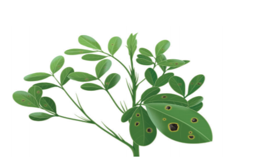
Some species of fungi live as saprophytes. They grow upon the dead and decaying organic matters and get food from them. Example. Rhizopus.
Do you know?
The branch of study of fungus is called mycology.
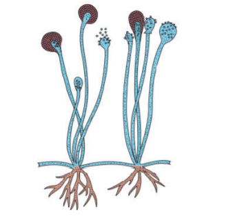
Some species of fungi are living with algae and mutually benefitted. Example Lichen. Some of them live symbiotically with higher plants in their roots called Mycorrhizae
Fungi are classified into different classes as given below.
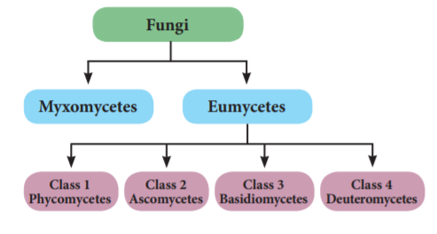
Fungi are useful to us in many ways. The importance of fungi are given below.
Antibiotic
Penicillin (Penicillium notatum) and Cephalosporin which cure different diseases are obtained from fungi.
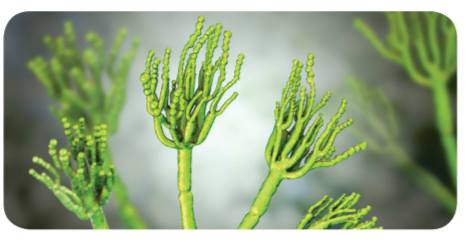
Food
Mushroom contains rich protein and minerals. The most common edible mushroom is Agaricus (Button mushroom).
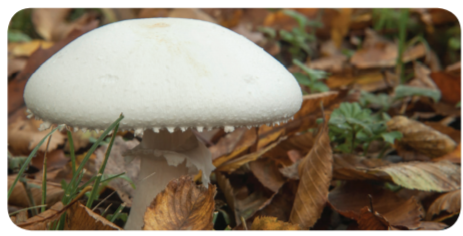
Vitamins
Fungus like Ashbya gospii and Eremothecium goshbyii) are used to produce vitamin B2 (riboflavin).
Alcohol
Fungus like yeast contain enzymes invertase and zymase, which ferment the sugar molasses into alcohol.
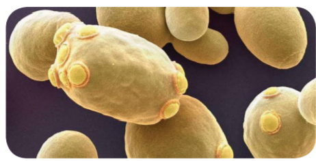
Fungi cause various diseases in plants and animals. They are given in the tables below.
Table 17 point 2 Diseases caused by fungi in plants
Pathogen |
Name of the Disease |
Fusarium oxysporum |
Wilt disease in cotton |
Cercospora personata |
Tikka disease in ground nut |
Colletotrichum falcatum |
Red rot in sugar cane |
Pyricularia oryzae |
Blast disease in paddy |
Albugo candida |
White rust in radish |
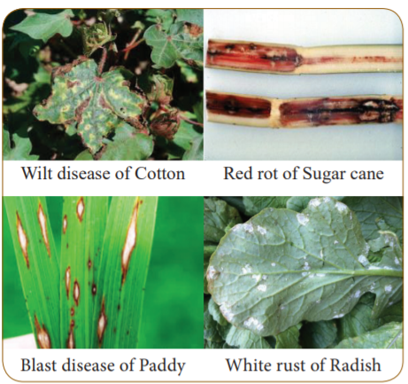
Info bits
Fungi are placed as third kingdom in R.H. Wittekar’s five kingdom of classification because of absence of chlorophyll and starch.
Activity 1
Take a piece of bread, pour some water on it and cover it for four days. After four days place the bread on a slide and observe it through microscope. What will you see? Name the organisms which you see in the slide.
Table 17 point 3 Diseases caused by fungi in human
Name of the Fungi |
Name of the Disease |
Trichophyton sp. |
Ring worm (Circular rash on the skin) |
Microsporum |
furfur Dandruff |
Tinea pedis |
Athletes foot |
More to Know
Claviceps purpuriya is the hallucinogenic fungi which causes greatest damages to the frustrated youth by giving unreal, extraordinary lightness and hovering sensations.
Aspergillus species cause allergy to children while Cladosporium protects against allergy
Table 17 point 4 Difference between algae and fungi
Algae |
Fungi |
Algae are autotrophs. |
Fungi are heterotrophs. |
They have pigments. |
They have no pigments |
Reserve food material is starch. |
Reserve food materials are glycogen and oil. |
Some algae are prokaryotic in nature Example Cyanobacteria (Nostac, Anabenae) |
All are eukaryotic nature. Example Agaricus |
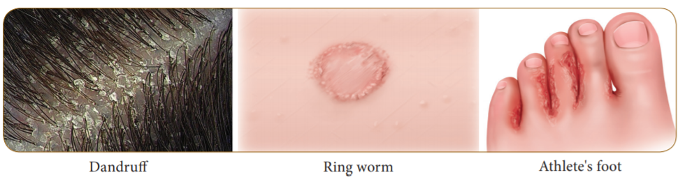
Do you know?
Penicillin is known as Queen of Medicine. It was discovered by Sir Alexander Fleming in 1928.
Bryophytes are the primitive and simplest group of plants. These are terrestrial and nonvascular cryptogams (They have no vascular tissues like xylem and phloem). Bryophytes live on land and in water. Therefore, they are named as amphibians of plant kingdom. Water is essential to complete their life cycle.
Bryophytes have distinct alternation of generation. Gametophyte generation is dominant and sporophytic generation is small. Sporophytic generation depends on the gametophytic generation. The gametophytic plant can be either thalloid (liverworts) or leafy (mosses). The plant remains fixed to the substratum with the help of root like structure called rhizoid.
Sexual reproduction is oogamous type. They have well developed sex organs like antheridia and archegonia. The male sex organ is antheridium, which produces antherozoid. The female sex organ is archegonium which contains an egg. Antherozoid swims with the help of water and reaches the archegonium. It fertilizes the egg and forms zygote (2 n). Zygote is the first cell which develops into sporophytic generation and produces haploid spore (n) by meiosis. Spore is the first cell of the gametophytic generation.
Bryophytes are classified into three classes. They are:
1. Hepaticae (Liverworts)
2. Anthoceratae (Hornworts)
3. Bryopsida (Mosses)
Hepaticae (Example. Riccia)
Anthocerotae (Example. Anthoceros)
Bryopsida (Example. Funaria)
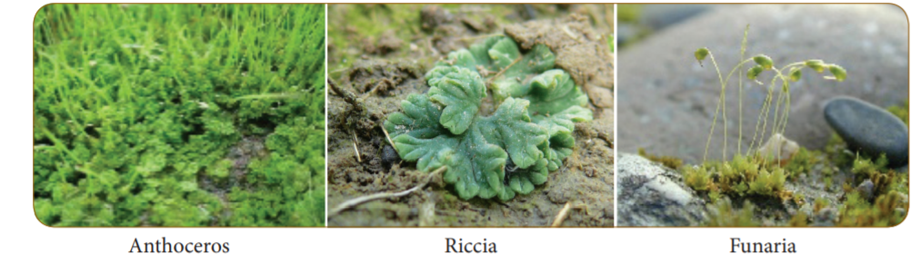
Activity 2
Visit a nearby nursery and observe how Sphagnum is used in horticulture and make a note on it.
Pteridophytes are the first true land plants with xylem and phloem. Hence, they are called vascular cryptogams. The main plant body is differentiated into true root, stem and leaves.
Pteridophytes also exhibit alternation of generation. The diploid sporophytic phase alternates with the haploid gametophytic phase. Sporophyte is the dominant phase. Sporophytes reproduce by means of spores. Spores are produced in sporangium. The sporangia bearing leaves are called sporophyll. Most of the plants produce only one type of spore either microspore or megaspore (homosporous). In some plants both microspore and megaspore are produced (heterosporous).
Spores give rise to gametophytic generation called prothallus, which is short lived and independent. The gametophytes produce the multicellular sex organs, antheridium which produces antherozoid (male gamete) and archegonium which contains an egg (female gamete). The antherozoid fertilizes with egg and form diploid zygote. It develops into an embryo which is differentiated into sporophyte.
Pteridophytes are classified into four classes. They are:
1. Psilopsida (Example. Psilotum)
2. Lycopsida (Example. Lycopodium)
3. Sphenopsida (Example. Equisetum)
4. Pteropsida (Example. Nephrolepis)
More to Know
Lycopodium, is known as club moss. Equisetum is known as horse tail.
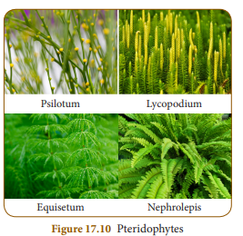
Table 17 point 5 Difference between Bryophytes and Pteridophytes
Bryophytes |
Pteridophytes |
Plant body cannot be differentiated into root, stem and leaf. |
Plant body can be differentiated into root, stem and leaf. |
Bryophytes are amphibians. |
Pteridophytes are true land plants |
Vascular tissues are absent. |
Vascular tissues are present. |
The dominant phase of the plant body is gametophyte |
The dominant phase of the plant body is sporophyte. |
Sporophytic generation depends on the gametophytic generation. Example. Riccia |
Gametophytic generation does not depend on sporophytic generation. Example. Selaginella |
Gymnosperm are naked seed plant, i.e. the ovule is not enclosed by ovary. Gymnosperms have two phases in its life cycle (Gametophytic and Sporophytic). Sporophytic plant body is dominant and it is differentiated into root, stem and leaf. They have well developed vascular tissues (xylem and phloem). The water conducting tissue is tracheid and the food conducting tissue is sieve cell. They have cone in which sporangia and spores are produced.
Gymnosperm are classified into four different types. They are:
1. Cycadales 2. Ginkgoales 3. Coniferales 4. Gnetales
Cycadales
These are palm like small plants (erect and unbranched). Leaves are pinnately compound forming a crown. They have tap root system and coralloid root. Example. Cycas sps.
Ginkgoales
These are large trees with fan shaped leaves. Ginko biloba is the only living species in the group. They produce unpleasant smell
Coniferales
These are evergreen trees with cone like appearance. They have needle like leaves or scale leaves. Seeds are winged and produced in female cone. Example. Pinus sps.
Gnetales
Gnetales are small group of plants. They possess advanced characters like angiosperm. Ovules are naked but, developed on flower like shoot. Example. Gnetum sps.
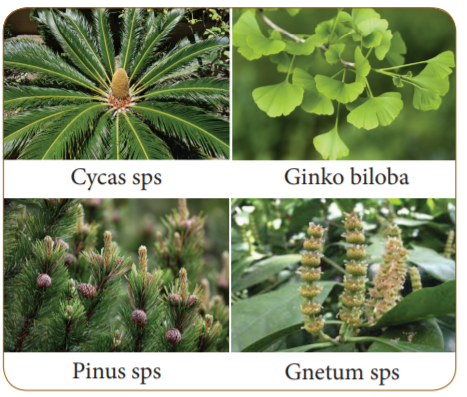
The term ‘Angiosperm’ is derived from two Greek words, that is ‘angio’ which means box or closed and ‘sperma’ which means seed. Habit of the plants may be herb (Solanaum melongena), shrub (Hibiscus rosasinensis) and tree (Mangifera indica - Mango). They have well developed vascular tissues called xylem and phloem. Xylem contains vessel, tracheid, xylem parenchyma and xylem fibre. Phloem contains sieve tubes, phloem parenchyma, companion cells and phloem fibres.
Characteristic features of Dicotyledons
Characteristic features of Monocotyledons
Activity 3
Collect some flowering plants from your surrounding and classify them as monocot or dicot based on their root system and venation.
Taxonomy is the branch of biology that deals with the study of identification, classification, description and nomenclature of living organisms. The word taxonomy is derived from two Greek words (Taxis means arrangement and Nomos means laws). The word 'taxonomy' was first coined by Augustin Pyramus de Candolle.
Plants are arranged into different groups and categories on the basis of similarities and differences. It is called classification. There are four types of classification.
1. Artificial system of classification
2. Natural system of classification
3. Phylogenetic system of classification
4. Modern system of classification
1. Artificial system of classification
This is the earliest system of classification in plants. Plants are classified on the basis of one or few morphological characters. The most famous artificial system of classification is Linnaeus classification which was proposed by Carolus Linnaeus in his book Species plantarum.
2. Natural system of classification
In this system, plants are classified on the basis of several characters. Bentham and Hooker’s classification is an example of natural system of classification. This system of classification is based on morphological and reproductive characters of the seeded plants. Bentham and Hooker published their natural system of classification in their book named General Plantarum in three volumes. This classification is widely used in many herbaria and botanical gardens all over the world.
Do you know?
Herbarium is the collection of pressed, dried plants pasted on a sheet and arranged according to any one of the accepted systems of classification.
The naming of an organisms with two words is known as Binomial Nomenclature. For example, the binomial name of mango is Mangifera indica. Here the first word Mangifera refers to the genus name and the second word indica refers to the species name.
Binomial name was first introduced by Gaspard Bauhin in the year of 1623. Binomial system was implemented by Linnaeus in his book, Species Plantarum. The system of naming the plants on scientific basis is known as Botanical nomenclature.
Do you know?
Largest Herbarium of India is in Kolkata, which has more than 10,00,000 (one million) species of herbarium specimens.
Info bits
The rules and recommendations regarding binomial nomenclature were found in I C B N (International Code of Botanical Nomenclature). Now it is known as ICN (International Code of Nomenclature).
Activity 4
Collect some plants which are growing inside your school area. Write their vernacular name, binomial name and classify them into dicotyledons or monocotyledons in the given table.
Vernacular name |
Binomial name |
Monocotyledons/ Dicotyledons |
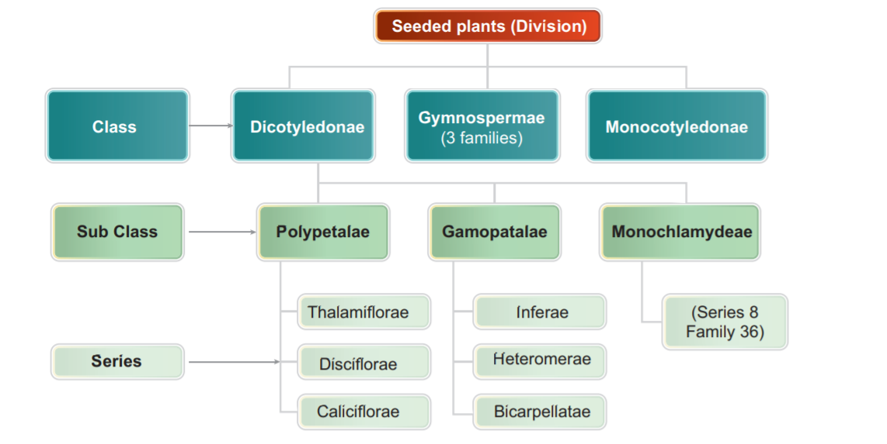
Plants are useful to us in many ways. Some plants along with their parts are used as medicines. Uses of some medicinal plants are given below.
Acalypha indica (Kuppaimeni)
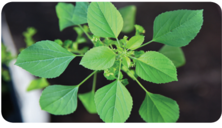
Aegle marmelos (Vilvam)
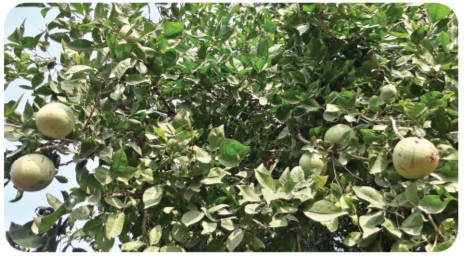
Solanum trilobatum (Thoodhuvalai)
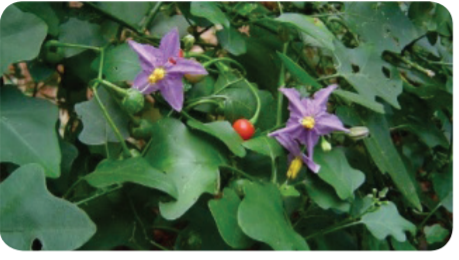
Phyllanthus amarus (Keezhanelli)
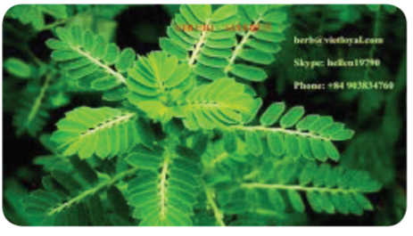
Aloe vera (Sothu Katrazhai)
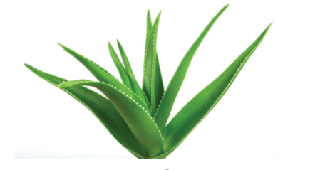
Haustoria - Special roots present in parasites.
Mycorrhiza - Symbiotic association of fungi with higher plant roots.
Epiphytes - Plants growing upon other plants.
Autotroups - Organisms which prepare their own food.
Heterotrophs - Organisms which depend on other organisms for their nutrition.
Vascular tissues - Tissues which conduct water and minerals.
Polypetalae - Petals which are many but not united.
Gamopetalae - United petal
Monochlamydeae- Flower with single whorl of perianth which cannot be differentiated into calyx
and corolla.